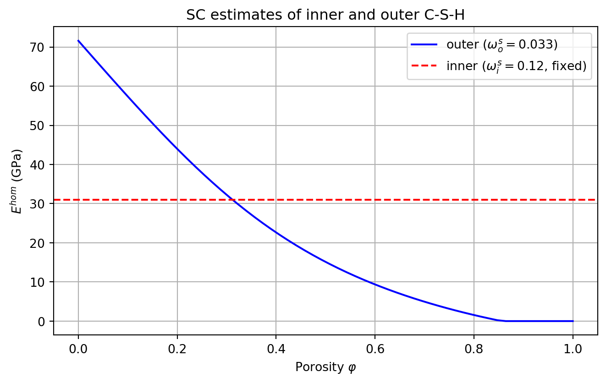
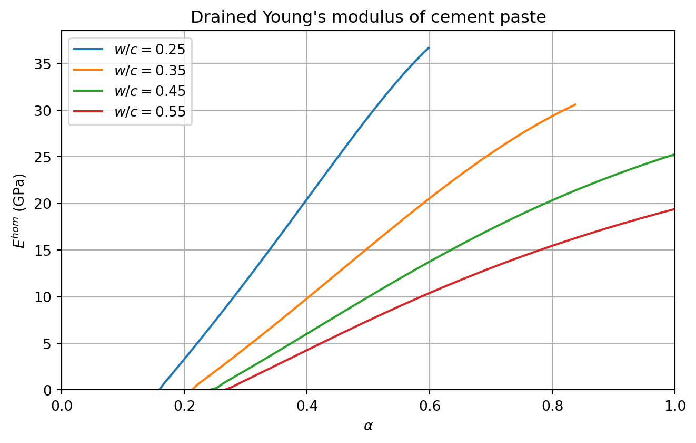
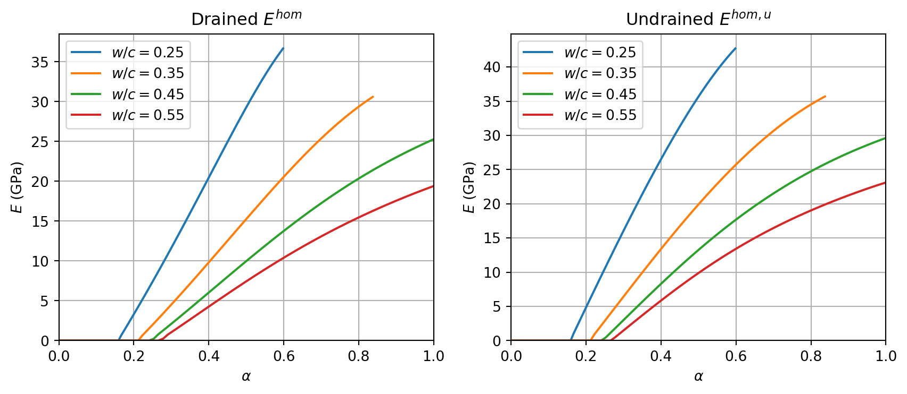

import numpy as np
from echoes import *
import matplotlib.pyplot as plt
np.set_printoptions(precision=5, suppress=True)21 Multiscale elasticity of a hydrating cement paste
Microstructural model
Sanahuja et al. (2007) distinguish two C-S-H types at the paste scale:
- Inner (high-density) hydrates — a porous polycrystal of oblate solid bricks (60×30×5 nm, aspect ratio \(\omega_i^s \approx 0.12\)) surrounding each anhydrous grain. Their porosity \(\varphi_i = 0.30\) is fixed throughout hydration.
- Outer (low-density) hydrates — oblate solid platelets (\(\omega_o^s = 0.033\), 4–8 bricks stacked) precipitating in the water-filled space. Their porosity \(\varphi_o\) evolves with hydration.
At the paste scale, composite inclusions (anhydrous core + inner layer) are embedded in the outer matrix via a generalized Mori-Tanaka scheme implemented with sphere_nlayers.
Powers hydration model and volume fractions
The Powers model (Powers and Brownyard, 1946) provides \(f_a\), \(f_h\) and the total porosity \(f_p\):
\[ f_a = \frac{0.32(1-\alpha)}{w/c+0.32},\quad f_h = \frac{0.68\,\alpha}{w/c+0.32},\quad f_p = \frac{w/c-0.17\,\alpha}{w/c+0.32} \]
Hydration stops when water (\(f_w = (w/c-0.4175\,\alpha)/(w/c+0.32)\)) or anhydrous is depleted: \(\alpha_{\max}=\min(1,\,w/c/0.4175)\).
The Tennis–Jennings model (Tennis and Jennings, 2000) gives the mass fraction \(m_{LD}\) of LD C-S-H: \[ m_{LD} = 3.017\,\alpha\,w/c - 1.347\,\alpha + 0.538 \]
Using \(\varphi_i = 0.30\) (fixed HD porosity), the five phase volumes are:
\[ f_i^s = (1-m_{LD})(1-f_a-f_p),\quad f_o^s = m_{LD}(1-f_a-f_p) \] \[ f_i^p = \frac{\varphi_i}{1-\varphi_i}\,f_i^s,\quad f_o^p = f_p - f_i^p \] \[ f_i = f_i^s+f_i^p,\quad \varphi_o = \frac{f_o^p}{f_o^p+f_o^s} \]
Volume fractions — Powers + Tennis-Jennings model
rho_a = 3.13 ; kappa_h = 2.13 ; kappa_w = 1.31
phi_i = 0.30 # inner (HD) fixed porosity
fa = lambda wc, a: 0.32 * (1.-a) / (wc + 0.32)
fh = lambda wc, a: 0.68 * a / (wc + 0.32)
fw = lambda wc, a: (wc - 0.4175*a) / (wc + 0.32)
fp = lambda wc, a: (wc - 0.17 *a) / (wc + 0.32) # total porosity
amax = lambda wc: min(1., wc / 0.4175)
mLD = lambda wc, a: np.clip(3.017*a*wc - 1.347*a + 0.538, 0., 1.)
def vf5(wc, alpha):
"""Returns fis, fos, fip, fop, fi, phi_o."""
_fa = fa(wc, alpha); _fp = fp(wc, alpha)
fhs = 1. - _fa - _fp # total solid hydrates
fis = (1. - mLD(wc, alpha)) * fhs
fos = mLD(wc, alpha) * fhs
fip = phi_i / (1. - phi_i) * fis
fop = _fp - fip
fi = fis + fip
phi_o = fop / (fop + fos) if (fop + fos) > 1.e-12 else 0.
return fis, fos, fip, fop, fi, phi_oScale 0: self-consistent estimates of inner and outer
Inner hydrates (fixed, SC)
The inner porosity \(\varphi_i=0.30\) is independent of \(w/c\) and \(\alpha\); \(C_\text{inner}\) is computed once:
omega_i = 0.12 # aspect ratio of HD solid bricks
omega_o = 0.033 # aspect ratio of LD solid platelets
C_sol = stiff_Enu(71.6, 0.27) # solid C-S-H (bricks and platelets)
C_anhyd = stiff_Enu(135., 0.3) # anhydrous clinker
ver_in = rve()
ver_in["SOLID"] = ellipsoid(shape=spheroidal(omega_i), symmetrize=[ISO],
fraction=1. - phi_i, prop={"C": C_sol})
ver_in["PORE"] = ellipsoid(shape=spherical, fraction=phi_i, prop={"C": tZ4})
C_inner = homogenize(prop="C", rve=ver_in, scheme=SC,
verbose=False, epsrel=1.e-10, maxnb=300)
print(f"Inner: E = {C_inner.E:.2f} GPa, k = {C_inner.k:.2f} GPa, "
f"mu = {C_inner.mu:.2f} GPa")Inner: E = 31.00 GPa, k = 19.93 GPa, mu = 12.49 GPaOuter hydrates (evolving \(\varphi_o\), SC)
The outer porosity \(\varphi_o(w/c,\alpha)\) varies with hydration. Setting occurs when \(\varphi_o\) reaches the SC percolation threshold (controlled by \(\omega_o^s\)):
Figure — Young’s modulus of inner and outer C-S-H (SC)
ver_out = rve()
ver_out["SOLID"] = ellipsoid(shape=spheroidal(omega_o), symmetrize=[ISO],
prop={"C": C_sol})
ver_out["PORE"] = ellipsoid(shape=spherical, prop={"C": tZ4})
def C_outer(phi_o):
ver_out["SOLID"].fraction = 1. - phi_o
ver_out["PORE"].fraction = phi_o
C = homogenize(prop="C", rve=ver_out, scheme=SC,
verbose=False, epsrel=1.e-10, maxnb=300)
if np.isnan(C.k): return tZ4
return C
# Illustration: outer stiffness vs porosity
lphi = np.linspace(0., 1., 60)
lE_in = [C_inner.E] * len(lphi)
lE_out = []
for phi in lphi:
Co = C_outer(phi)
lE_out.append(Co.E if not np.isnan(Co.E) else 0.)
fig, ax = plt.subplots(figsize=(7, 4.5))
ax.plot(lphi, lE_out, 'b-', label=r"outer ($\omega_o^s=0.033$)")
ax.axhline(C_inner.E, color='r', ls='--', label=r"inner ($\omega_i^s=0.12$, fixed)")
ax.set_xlabel(r"Porosity $\varphi$")
ax.set_ylabel(r"$E^{hom}$ (GPa)")
ax.set_title("SC estimates of inner and outer C-S-H")
ax.grid(True); ax.legend()
plt.tight_layout(); plt.show()
Scale 1: cement paste (generalized MT)
At the paste scale, composite spheres (anhydrous core of radius \(R_a\) coated by an inner layer up to radius \(R_\text{ref}=1\)) are embedded in the outer matrix via the Mori-Tanaka scheme. The radius ratio is fixed by the volume fraction constraint:
\[ \frac{R_a}{R_\text{ref}} = \left(\frac{f_a}{f_a+f_i}\right)^{1/3} \]
Function C_paste() — paste-scale homogenization (MT)
def C_paste(wc, alpha=-1.):
if alpha < 0.: alpha = amax(wc)
if alpha < 1.e-6: return None
_fa = fa(wc, alpha)
fis, fos, fip, fop, fi, phi_o = vf5(wc, alpha)
if fop < 0. or phi_o >= 1.: return None
Cout = C_outer(phi_o)
if Cout is tZ4 or np.isnan(Cout.k): return None
f_outer = 1. - _fa - fi # outer fraction in paste
f_inc = _fa + fi # sphere_nlayers fraction
Ra = ((_fa / f_inc)**(1./3.) if f_inc > 1.e-12 else 0.)
ver = rve(matrix="OUTER")
ver["OUTER"] = ellipsoid(shape=spherical, fraction=f_outer,
prop={"C": Cout})
ver["INC"] = sphere_nlayers(radii=[Ra, 1.],
fraction=f_inc,
prop={"C": [C_anhyd, C_inner]})
return homogenize(prop="C", rve=ver, scheme=MT, verbose=False)Figure — drained Young’s modulus of cement paste
wc_list = [0.25, 0.35, 0.45, 0.55]
fig, ax = plt.subplots(figsize=(7, 4.5))
for wc in wc_list:
la = np.linspace(0., 0.999 * amax(wc), 80)
lE = []
for alpha in la:
C = C_paste(wc, alpha)
lE.append(C.E if C is not None and not np.isnan(C.E) else 0.)
ax.plot(la, lE, label=fr"$w/c={wc}$")
ax.set_xlabel(r"$\alpha$"); ax.set_ylabel(r"$E^{hom}$ (GPa)")
ax.set_title("Drained Young's modulus of cement paste")
ax.set_xlim(0., 1.); ax.set_ylim(bottom=0.)
ax.grid(True); ax.legend()
plt.tight_layout(); plt.show()
The model correctly predicts:
- a setting threshold (onset of stiffness) at \(\alpha \approx 0.1\)–\(0.25\) depending on \(w/c\), controlled by the SC percolation of the outer phase;
- a monotonic increase of \(E^{hom}\) up to \(\alpha_{\max}\);
- lower asymptotic stiffness for higher \(w/c\) (more residual porosity at full hydration).
Undrained moduli
Ultra-sonic measurements probe the undrained elastic moduli of the saturated paste. The conversion uses Biot poromechanics (see Section 12.2.1). For a porous medium with homogeneous isotropic solid (moduli \(k_s\), \(\mu_s\)):
\[ b = 1 - \frac{k^{hom}}{k_s}, \qquad M = \frac{k_s}{b - \varphi}, \qquad k^u = k^{hom} + M b^2, \qquad \mu^u = \mu^{hom} \]
Applied scale by scale (inner, then outer with \(k_s = k_\text{solid CSH}\); paste with the undrained inner/outer as inputs):
Function C_paste_undrained() — drained and undrained moduli
ks_sol, mus_sol = C_sol.kmu # solid C-S-H
def undrained_kmu(k_hom, mu_hom, k_s, phi):
"""Biot undrained bulk modulus."""
if k_hom < 1.e-12 or phi <= 0.:
return k_hom, mu_hom
b = 1. - k_hom / k_s
M = k_s / max(b - phi, 1.e-12)
return k_hom + M * b**2, mu_hom
# Undrained inner (fixed)
k_iu, mu_iu = undrained_kmu(C_inner.k, C_inner.mu, ks_sol, phi_i)
C_inner_u = stiff_kmu(k_iu, mu_iu)
def C_paste_undrained(wc, alpha=-1.):
if alpha < 0.: alpha = amax(wc)
if alpha < 1.e-6: return None
_fa = fa(wc, alpha)
fis, fos, fip, fop, fi, phi_o = vf5(wc, alpha)
if fop < 0. or phi_o >= 1.: return None
Cout = C_outer(phi_o)
if Cout is tZ4 or np.isnan(Cout.k): return None
# Undrained outer
k_ou, mu_ou = undrained_kmu(Cout.k, Cout.mu, ks_sol, phi_o)
Cout_u = stiff_kmu(k_ou, mu_ou)
f_outer = 1. - _fa - fi
f_inc = _fa + fi
Ra = (_fa / f_inc)**(1./3.) if f_inc > 1.e-12 else 0.
ver = rve(matrix="OUTER")
ver["OUTER"] = ellipsoid(shape=spherical, fraction=f_outer,
prop={"C": Cout_u})
ver["INC"] = sphere_nlayers(radii=[Ra, 1.],
fraction=f_inc,
prop={"C": [C_anhyd, C_inner_u]})
return homogenize(prop="C", rve=ver, scheme=MT, verbose=False)Figure — drained vs undrained moduli
fig, axes = plt.subplots(1, 2, figsize=(9, 4))
for wc in wc_list:
la = np.linspace(0., 0.999 * amax(wc), 80)
lEd, lEu = [], []
for alpha in la:
Cd = C_paste(wc, alpha)
Cu = C_paste_undrained(wc, alpha)
lEd.append(Cd.E if Cd is not None and not np.isnan(Cd.E) else 0.)
lEu.append(Cu.E if Cu is not None and not np.isnan(Cu.E) else 0.)
axes[0].plot(la, lEd, label=fr"$w/c={wc}$")
axes[1].plot(la, lEu, label=fr"$w/c={wc}$")
for ax, title in zip(axes, ["Drained $E^{hom}$", "Undrained $E^{hom,u}$"]):
ax.set_xlabel(r"$\alpha$"); ax.set_ylabel(r"$E$ (GPa)")
ax.set_title(title); ax.set_xlim(0., 1.); ax.set_ylim(bottom=0.)
ax.grid(True); ax.legend()
plt.tight_layout(); plt.show()
The undrained moduli are systematically higher than the drained ones, the difference being largest at low hydration degrees where the pore network is still well connected. At full hydration the difference vanishes as \(\varphi \to 0\) and \(b \to 0\).
\(\,\)